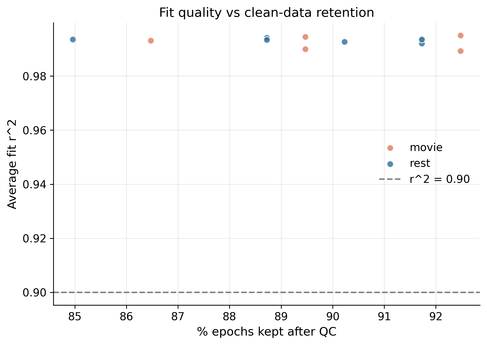
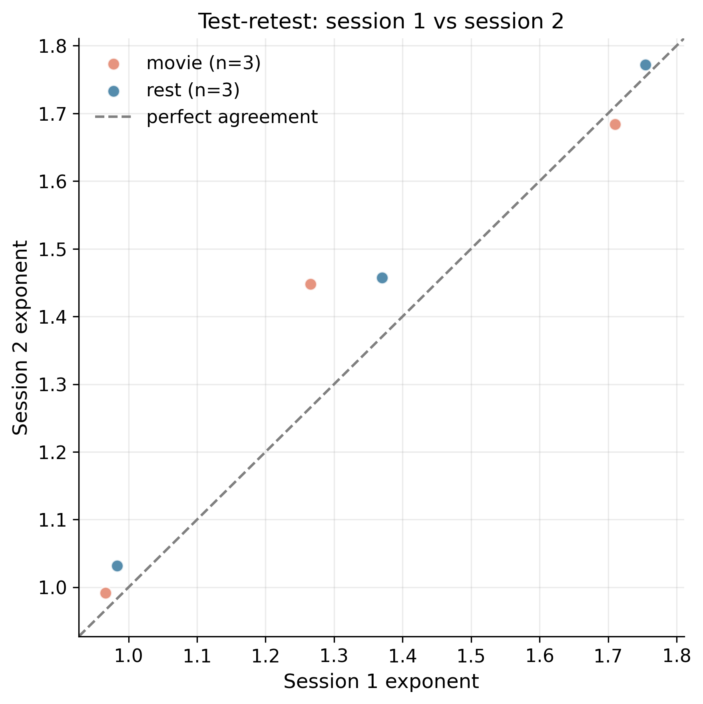
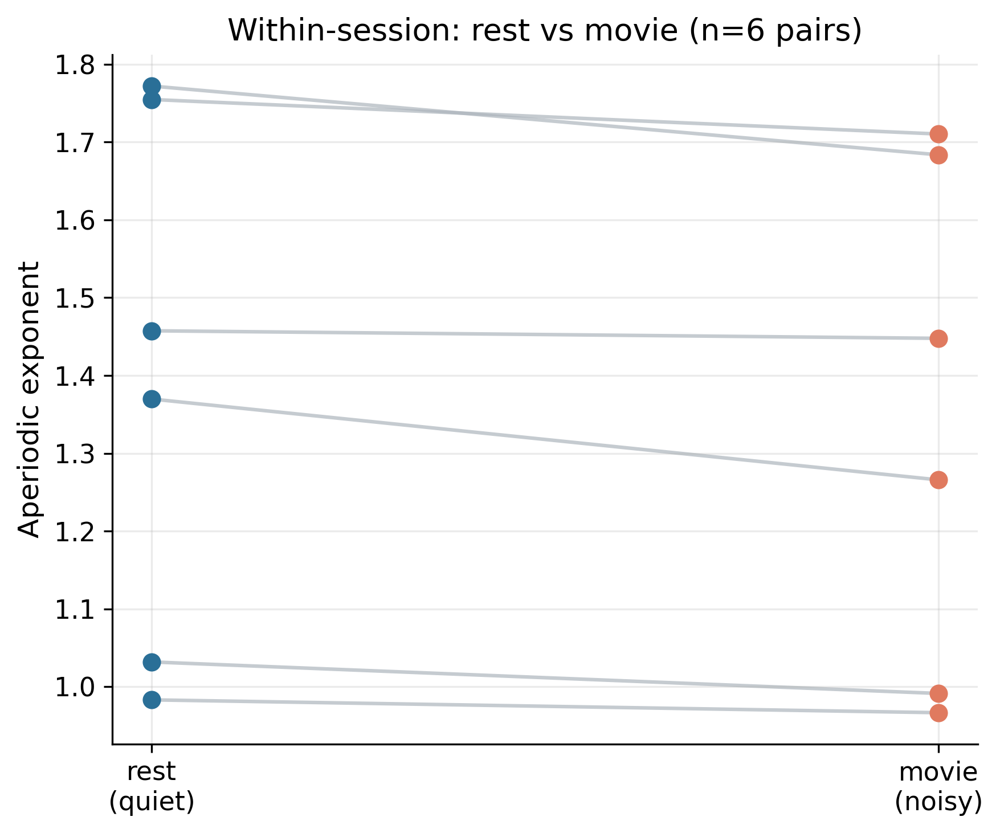
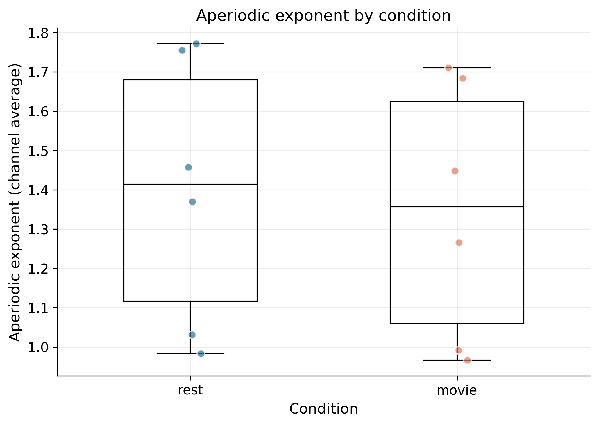
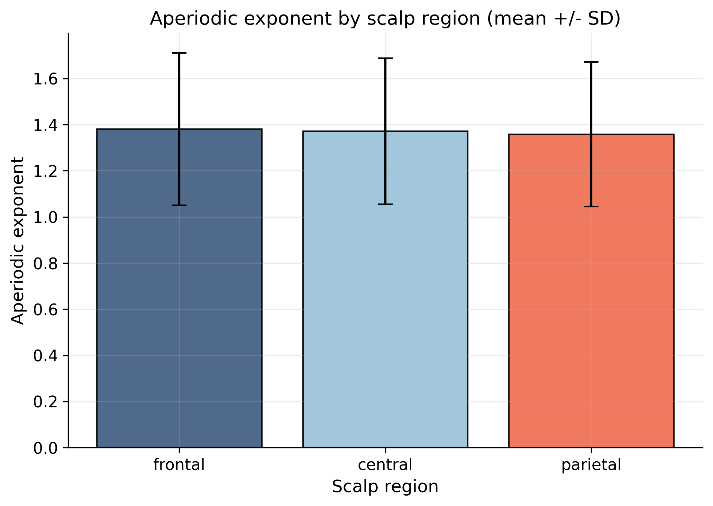
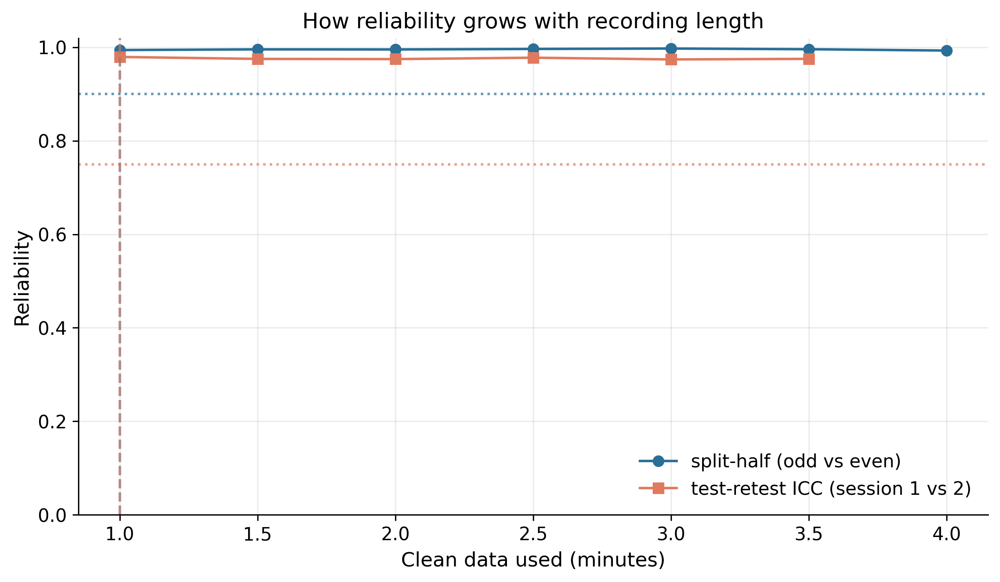
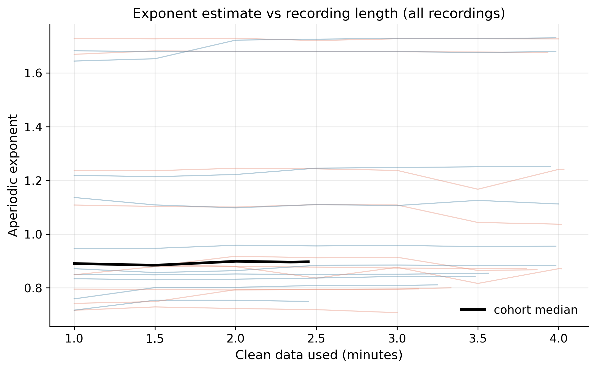

Recordings processed: 20. This report answers the study's core questions: can the Xon headset recover the aperiodic exponent accurately, is it reliable across a person's repeat sessions, does it survive a noisy condition, and how few minutes of clean data are needed.
Distribution of the exponent, fit r², and how much clean data survived QC, overall and by condition.
| group | metric | n | mean | sd | median | iqr | min | max |
|---|---|---|---|---|---|---|---|---|
| all | aperiodic exponent | 20 | 1.0630 | 0.3471 | 0.9041 | 0.3951 | 0.7253 | 1.7180 |
| all | fit r^2 | 20 | 0.9925 | 0.0029 | 0.9925 | 0.0027 | 0.9841 | 0.9969 |
| all | % epochs kept | 20 | 83.1960 | 10.0081 | 88.9100 | 12.2200 | 55.2600 | 90.9800 |
| all | clean minutes | 20 | 3.6883 | 0.4437 | 3.9417 | 0.5417 | 2.4500 | 4.0333 |
| all | across-channel SD | 20 | 0.0309 | 0.0069 | 0.0298 | 0.0079 | 0.0208 | 0.0446 |
| movie | aperiodic exponent | 10 | 1.0496 | 0.3597 | 0.8739 | 0.3792 | 0.7253 | 1.7136 |
| movie | fit r^2 | 10 | 0.9927 | 0.0026 | 0.9924 | 0.0024 | 0.9881 | 0.9969 |
| movie | % epochs kept | 10 | 83.7600 | 9.0145 | 87.9700 | 12.6875 | 67.6700 | 90.9800 |
| movie | clean minutes | 10 | 3.7133 | 0.3997 | 3.9000 | 0.5626 | 3.0000 | 4.0333 |
| movie | across-channel SD | 10 | 0.0274 | 0.0056 | 0.0260 | 0.0038 | 0.0208 | 0.0416 |
| rest | aperiodic exponent | 10 | 1.0763 | 0.3529 | 0.9255 | 0.3828 | 0.7306 | 1.7180 |
| rest | fit r^2 | 10 | 0.9923 | 0.0034 | 0.9925 | 0.0028 | 0.9841 | 0.9960 |
| rest | % epochs kept | 10 | 82.6320 | 11.3791 | 89.4750 | 10.8100 | 55.2600 | 90.2300 |
| rest | clean minutes | 10 | 3.6633 | 0.5044 | 3.9667 | 0.4791 | 2.4500 | 4.0000 |
| rest | across-channel SD | 10 | 0.0344 | 0.0064 | 0.0324 | 0.0079 | 0.0239 | 0.0446 |

ICC(2,1) is the standard test-retest statistic (>0.75 good, >0.9 excellent).
| condition | n_participants_complete | n_sessions | ICC(2,1) | pearson_r | pearson_p | mean_abs_session_diff | note |
|---|---|---|---|---|---|---|---|
| movie | 5 | 2 | 0.9814 | 0.9839 | 0.0024 | 0.0673 | excellent reliability |
| rest | 5 | 2 | 0.9886 | 0.9887 | 0.0014 | 0.0498 | excellent reliability |

Does the exponent hold up when the participant is watching a movie (more movement/noise) versus resting? A paired contrast within each participant-session.
| quiet | rest |
| noisy | movie |
| n_pairs | 10 |
| quiet_mean | 1.0763 |
| noisy_mean | 1.0496 |
| mean_diff_noisy_minus_quiet | -0.0267 |
| cohen_dz | -0.6882 |
| paired_t | -2.1762 |
| paired_t_p | 0.0575 |
| wilcoxon_p | 0.0645 |


| region | n | mean | sd | median | iqr | min | max |
|---|---|---|---|---|---|---|---|
| frontal | 20 | 1.0721 | 0.3557 | 0.8815 | 0.4142 | 0.7010 | 1.7253 |
| central | 20 | 1.0594 | 0.3445 | 0.8980 | 0.3789 | 0.7238 | 1.7261 |
| parietal | 20 | 1.0641 | 0.3464 | 0.9314 | 0.3979 | 0.7408 | 1.7314 |
| test | Friedman |
| regions | ['frontal', 'central', 'parietal'] |
| n_recordings | 20 |
| statistic | 1.2 |
| p_value | 0.5488 |

We estimate the exponent using increasing amounts of clean data and ask how reliable it becomes. Two standard measures: split-half internal consistency (odd vs even epochs, Spearman-Brown corrected; target ≥ 0.9) and between-session test-retest ICC (session 1 vs session 2; target ≥ 0.75 = "good"). The shortest recording length that reaches each target is the evidence-based answer to how few minutes are needed.
| split_half_target | 0.9 |
| icc_target | 0.75 |
| minutes_for_split_half | 1.0 |
| minutes_for_good_icc | 1.0 |
| max_split_half | 0.9975 |
| max_icc | 0.9795 |
| n_recordings | 20 |


Method grounded in the aperiodic-reliability literature (McKeown et al. 2024, Cerebral Cortex; epoch-increment split-half reliability as in EEG power-spectrum reliability work). The full curve is in stats_reliability_by_duration.csv.
See gallery.html for a one-page contact sheet of every recording's diagnostic figure. Per-recording QC reports (qc_report_<id>.html) and the wide master_everything.csv sit alongside this file for drill-down.